第 1 章 宏观经济学是什么The Science of Macroeconomics
对应文件：
notes1.ppt｜ 页码：1-1 ~ 1-55 ｜ 共 55 页体例：每页先「原文照录」，再「中文对照」（逐句直译，不合并），再「要点」（模型位置、易错点、与前页关系）；该页有图则贴原图，有演讲者备注则单列「教师备注」。
本章地图
| 区段 | 页码 | 内容 | 在全课中的位置 |
|---|---|---|---|
| 导论 | 1-1 ~ 1-7 | 宏观关心什么：增长与波动、生活成本、欧洲失业、衰退、赤字、贸易赤字、贫困 | 提出全课问题清单 |
| 案例 1 | 1-8 ~ 1-12 | 津巴布韦恶性通胀：成因、数据、100 万亿钞票、美元化 | 通胀极端案例 |
| 案例 2 | 1-13 ~ 1-18 | 中国持有美国国债：规模、动因、政治/经济风险、抛售的两难 | 开放经济与资本流动的引子 |
| 案例 3 | 1-19 ~ 1-27 | 欧债危机：希腊时间线、欧元汇率、七项成因、救助方案、退出欧元区的后果 | 货币联盟与财政联盟的冲突 |
| 为什么学 | 1-28 ~ 1-34 | 失业的社会代价（自杀、凶杀、监狱）、法国失业与工资增长、房贷利率、选举年通胀与失业 | 宏观与个人福利、政治的连接 |
| 方法论 | 1-35 ~ 1-47 | 经济模型：简化、汽车供需模型、函数记号、内生/外生变量 | 全书的分析工具 |
| 模型分类 | 1-48 ~ 1-53 | 多模型并存、价格弹性 vs 黏性、全书结构（长期/增长/短期/政策） | 全书路线图 |
| 总结 | 1-54 ~ 1-55 | 本章总结 | — |
1-1Chapter 1 The Science of Macroeconomics
Chapter 1
The Science of Macroeconomics
第 1 章
宏观经济学是什么（直译：宏观经济学的科学）
- 讲义取自 Mankiw & Taylor《Macroeconomics》European Edition（页脚版权行：© 2008 Worth Publishers）。后续各章的图形页码（如「4 of 38」）是教材原配幻灯片的编号，与本资料按文件重排的页码不同，勿混用。
1-2Learning objectives
| 原文 | 中文对照 |
|---|---|
| Learning objectives | 学习目标 |
| This chapter introduces you to | 本章向你介绍 |
| the issues macroeconomists study | 宏观经济学家研究的问题 |
| the tools macroeconomists use | 宏观经济学家使用的工具 |
| some important concepts in macroeconomic analysis | 宏观经济分析中的一些重要概念 |
- 三个目标对应本章三段结构：问题（1-3 ~ 1-34）→ 工具（1-35 ~ 1-53）→ 概念（贯穿全章）。
1-3What do we care about?
| 原文 | 中文对照 |
|---|---|
| What do we care about? | 我们关心什么？ |
| Although we study many issues in this macroeconomic course, what we care most are: | 尽管本课程研究许多议题，我们最关心的是： |
| · Economic growth | · 经济增长 |
| · Economic fluctuations | · 经济波动 |
- 全课只有两个终极关切：增长（长期趋势）与波动（短期偏离趋势）。1-52 的教材结构正是按这两条线切分：第 3–7 章讲长期（价格弹性），第 11–15 章讲短期（价格黏性）。
- 后续所有模型都可归入这两类之一；遇到新模型先问：它解释的是趋势还是波动？
1-4An example of macroeconomics terms: Gross Domestic Product of the US（第 1 帧）
| 原文 | 中文对照 |
|---|---|
| An example of macroeconomics terms: Gross Domestic Product of the US in billions of chained 1996 dollars | 宏观术语示例：美国国内生产总值，单位：以 1996 年连锁美元计价的十亿美元 |
| long-run upward trend… | 长期上升趋势…… |
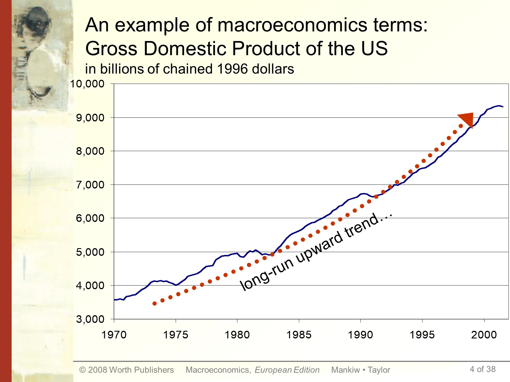
教师备注（原文＋译文）8 段
教师备注（原文照录）
This graph shows data on U.S. Gross Domestic Product. For now, it suffices for students to know that GDP is a measure of the economy's total output and total income, and that the data in this chart have been adjusted to take out the effects of inflation. (In Chapter 2, students will learn the exact definition of GDP, how it's measured, and how it's corrected for inflation).
There are two main points students should get from this graph.
First, over the long run, there's a clear upward trend. One of the most important issues in macroeconomics is understanding this long run growth: what determines how fast a country grows over the long run, how do government policies affect the growth rate, and how could we achieve faster growth? This topic is critical, because it's very tightly linked to our standard of living.
(continued next slide….)
教师备注（译文）
这张图画的是美国国内生产总值的数据。目前只需让学生知道：GDP 是衡量经济总产出与总收入的指标，图中数据已剔除通货膨胀的影响。（第 2 章会讲 GDP 的确切定义、如何计量、如何做通胀调整。）
学生应从这张图得到两个要点。
第一，长期看存在清晰的上升趋势。宏观经济学最重要的问题之一就是理解这种长期增长：什么决定一国长期增长的速度、政府政策如何影响增长率、我们怎样才能实现更快的增长？这个问题至关重要，因为它与我们的生活水平紧密相连。
（下页续……）
- 纵轴 3,000–10,000（十亿美元，1996 年连锁美元），横轴 1970–2000；红线是趋势线，蓝线是实际 GDP。
- 「chained 1996 dollars」= 以 1996 年为基期的连锁加权实际值，这正是第 2 章 2-42 要讲的 chain-weighted real GDP 的早期版本。
1-5An example of macroeconomics terms: Gross Domestic Product of the US（第 2 帧）
| 原文 | 中文对照 |
|---|---|
| An example of macroeconomics terms: Gross Domestic Product of the US in billions of chained 1996 dollars | 宏观术语示例：美国国内生产总值，单位：以 1996 年连锁美元计价的十亿美元 |
| Recessions | 衰退 |
| longest economic expansion on record | 有记录以来最长的经济扩张 |
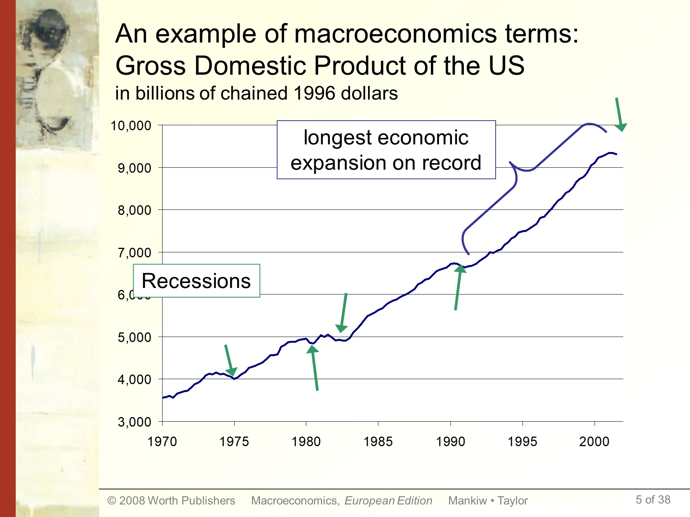
教师备注（原文＋译文）4 段
教师备注（原文照录）
Second, the economy doesn't always grow smoothly: over the short run, the economy sometimes experiences periods of falling GDP, called recessions. What students see in this graph as little downward blips correspond to periods during which hundreds of thousands of workers lose their jobs.
Periods of rising GDP are called "expansions." In March 2001, the U.S. completed the longest expansion on record. When the economy is expanding, firms are producing more goods and services, and therefore hiring more workers. Consumer incomes are rising, and consumers are spending more.
教师备注（译文）
第二，经济并不总是平滑增长：短期内经济有时会出现 GDP 下降的时期，称为衰退。学生在这张图上看到的小幅下探，对应的是数十万工人失业的时期。
GDP 上升的时期称为「扩张」。2001 年 3 月，美国结束了有记录以来最长的一次扩张。经济扩张时，企业生产更多商品与服务，因而雇用更多工人；消费者收入上升，支出增加。
- 同一张图分两帧讲：1-4 讲趋势，1-5 讲趋势上的凹陷。这是本套讲义的标准讲法——先看长期趋势，再看短期偏离。
- 图上红点标注的两段是 1970 年代中、1980 年代初、1990 年代初、2001 年的衰退。
1-6Important issues in macroeconomics（第 1 帧）
| 原文 | 中文对照 |
|---|---|
| Important issues in macroeconomics | 宏观经济学的重要议题 |
| Why does the cost of living keep rising? | 为什么生活成本持续上升？ |
| Why is the unemployment rate in continental Europe higher than in the U.S. or Japan? | 为什么欧洲大陆的失业率高于美国或日本？ |
| Why are there recessions? Can the government do anything to combat recessions? Should it?? | 为什么会有衰退？政府能做些什么来对抗衰退吗？应该做吗？？ |
教师备注（原文＋译文）2 段
教师备注（原文照录）
This slide and the next contain a list of some topical issues that macro can help students understand. Feel free to substitute others as new issues emerge.
教师备注（译文）
本页与下一页列出一些宏观经济学能帮助学生理解的现实议题。出现新议题时可自行替换。
- 三个问题分别对应本课三大板块：通胀（第 5 章）、失业（第 7 章）、经济周期与政策（第 11–15 章、第 16–20 章）。
- 「Should it??」的双问号是原页写法，暗示规范性问题（该不该）与实证性问题（能不能）要分开回答。
1-7Important issues in macroeconomics（第 2 帧）
| 原文 | 中文对照 |
|---|---|
| Important issues in macroeconomics | 宏观经济学的重要议题 |
| What is the government budget deficit? How does it affect the economy? | 什么是政府预算赤字？它如何影响经济？ |
| Why does the U.S. have such a huge trade deficit? | 为什么美国有如此巨大的贸易赤字？ |
| Why are so many countries poor? What policies might help them grow out of poverty? | 为什么这么多国家贫穷？什么政策可能帮助它们摆脱贫困？ |
- 财政赤字 → 第 3 章可贷资金市场（3-47 ~ 3-58）；贸易赤字 → 第 6 章开放经济（6-19 ~ 6-24）；贫困与增长 → 第 8–10 章增长理论（1-52 所列）。
1-8Example 1: Hyperinflation in Zimbabwe（第 1 帧）
| 原文 | 中文对照 |
|---|---|
| Example 1: Hyperinflation in Zimbabwe | 例 1：津巴布韦的恶性通货膨胀 |
教师备注（原文＋译文）2 段
教师备注（原文照录）
Left: "How bad is inflation in Zimbabwe?". By Michael Wines, New York Times, published May 2 2006.
教师备注（译文）
左图：《津巴布韦的通胀有多糟？》，Michael Wines 撰，《纽约时报》，2006 年 5 月 2 日刊。
- 该图是 2006 年《纽约时报》报道的剪报，标题即「How bad is inflation in Zimbabwe?」；报道时通胀已使货币购买力按天折算。
1-9100 Trillion Banknote
| 原文 | 中文对照 |
|---|---|
| 100 Trillion Banknote | 100 万亿面额钞票 |
教师备注（原文＋译文）2 段
教师备注（原文照录）
Jan 16, 2009: "Zimbabwe to print first $100 trillion note" From: http://edition.cnn.com/2009/WORLD/africa/01/16/zimbawe.currency/
教师备注（译文）
2009 年 1 月 16 日：「津巴布韦将印制首张 100 万亿面额钞票」 来源： http://edition.cnn.com/2009/WORLD/africa/01/16/zimbawe.currency/
- 100 万亿 = 10^14 津元。按 1-10 的汇率水平，这张钞票的实际购买力只相当于几美元，是「名义值 ≠ 实际值」的极端例证。
1-10Example 1: How Bad is Hyperinflation in Zimbabwe?
| 原文 | 中文对照 |
|---|---|
| Example 1: How Bad is Hyperinflation in Zimbabwe? | 例 1：津巴布韦的恶性通胀有多严重？ |
| Zimbabwe has been tormented this entire decade by both deep recession and high inflation. | 津巴布韦整整十年饱受深度衰退与高通胀的双重折磨。 |
| Zimbabwe's inflation has surged to 231 million per cent in July 2008. | 2008 年 7 月，津巴布韦通胀率飙升至 2.31 亿%。 |
| In Feb 2009, Zimbabwe central bank decided to remove 12 zeros from currency. | 2009 年 2 月，津巴布韦央行决定从货币中删去 12 个零。 |
教师备注（原文＋译文）2 段
教师备注（原文照录）
Inflation rate in Nov 2008 reached 79,600,000,000%. Source: https://en.wikipedia.org/wiki/Hyperinflation_in_Zimbabwe
教师备注（译文）
2008 年 11 月的通胀率达到 79,600,000,000%。来源：https://en.wikipedia.org/wiki/Hyperinflation_in_Zimbabwe
- 三个数字要记牢：2008 年 7 月 2.31 亿%（月度同比）、2008 年 11 月 796 亿%、2009 年 2 月删去 12 个零（即除以 10^12）。
- 「删零」是恶性通胀的典型善后手段：不改变实际价值，只重置计价单位，属于货币改革（redenomination）。
1-11Example 1: Hyperinflation in Zimbabwe（成因）
| 原文 | 中文对照 |
|---|---|
| Example 1: Hyperinflation in Zimbabwe | 例 1：津巴布韦的恶性通货膨胀 |
| Zimbabwe fell into hyperinflation after the government began seizing commercial farms in about 2000. | 约 2000 年政府开始没收商业农场后，津巴布韦陷入恶性通胀。 |
| Foreign investors fled, manufacturing ground to a halt, goods and foreign currency needed to buy imports fell into short supply and prices shot up. | 外国投资者逃离，制造业停摆，购买进口品所需的商品与外汇短缺，物价飞涨。 |
- 因果链：没收农场 → 产权不安全 → 外资撤离 → 产出崩溃 → 供给短缺 + 外汇枯竭 → 物价飞涨。这是「供给冲击型」恶性通胀，与第 5 章讲的「财政赤字货币化型」恶性通胀（5-52、5-54）机制不同，考试常要求区分。
1-12Example 1: Combat the inflation
| 原文 | 中文对照 |
|---|---|
| Example 1: Combat the inflation | 例 1：治理通胀 |
| Allow use of foreign currencies, and remove the worthless Zimbabwean dollar from circulation. | 允许使用外国货币，并把毫无价值的津巴布韦元移出流通。 |
| 美元化的利与弊 | 美元化的利与弊（原页为中文小标题） |
教师备注（原文＋译文）4 段
教师备注（原文照录）
By April 2009, the Zimbabwe dollar was suspended indefinitely; the government now uses the South African Rand, the United States Dollar, and the British Pound.
不过，具有讽刺意味的是，虽然津巴布韦元在本国不大受欢迎，但是在收藏界，票面万亿的津巴布韦元却成为了收藏者最热门的收藏品。
教师备注（译文）
到 2009 年 4 月，津巴布韦元被无限期停用；政府现在使用南非兰特、美元与英镑。
（中文部分原文照录，不另译）不过，具有讽刺意味的是，虽然津巴布韦元在本国不大受欢迎，但是在收藏界，票面万亿的津巴布韦元却成为了收藏者最热门的收藏品。
- 治理手段只有一条：放弃本币、改用外币（美元化）。代价是丧失独立货币政策——这与第 6 章固定汇率制的取舍（6-49 ~ 6-53 的 PPP 与汇率制度讨论）同源。
- 美元化的利：迅速终止通胀、恢复计价职能；弊：铸币税归他国、无法用货币政策应对衰退。
1-13Example 2: Why buying US Treasury bonds?（第 1 帧）
| Major Foreign Holders of US Treasury Securities (in billions of dollars) | June-2024 | June-2023 | June-2026 | Country |
|---|---|---|---|---|
| Japan | 1117.7 | 1104.1 | 1116.7 | Japan |
| China, Mainland | 780.2 | 835.8 | 939.9 | United Kingdom |
| United Kingdom | 741.5 | 624.4 | 633.4 | China, Mainland |
| Luxembourg | 384.2 | 330.7 | 482.5 | Belgium |
| Canada | 374.8 | 275.6 | 459.6 | Canada |
| Mexico | 95.8 | 70.9 | ||
| Grand Total | 8210.4 | 7559.0 | 9299.0 |
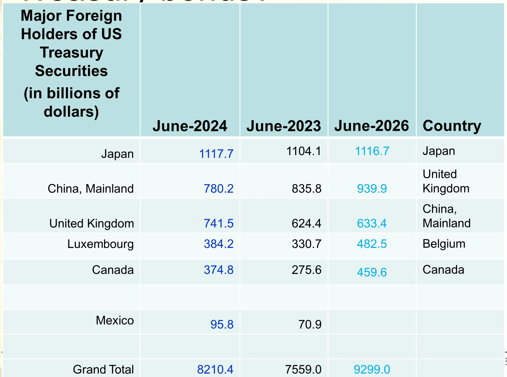
| 美国国债主要海外持有者（十亿美元） | 2024 年 6 月 | 2023 年 6 月 | 2026 年 6 月 | 国别（原页附加列） |
|---|---|---|---|---|
| 日本 | 1117.7 | 1104.1 | 1116.7 | 日本 |
| 中国大陆 | 780.2 | 835.8 | 939.9 | 英国 |
| 英国 | 741.5 | 624.4 | 633.4 | 中国大陆 |
| 卢森堡 | 384.2 | 330.7 | 482.5 | 比利时 |
| 加拿大 | 374.8 | 275.6 | 459.6 | 加拿大 |
| 墨西哥 | 95.8 | 70.9 | ||
| 合计 | 8210.4 | 7559.0 | 9299.0 |
教师备注（原文＋译文）4 段
教师备注（原文照录）
Source: https://ticdata.treasury.gov/resource-center/data-chart-center/tic/Documents/slt_table5.html
2025年12月，墨西哥国会迅速批准了一项针对中国的高额关税法案，将1463种中国进口商品的税率上调至5%至50%。
教师备注（译文）
来源：https://ticdata.treasury.gov/resource-center/data-chart-center/tic/Documents/slt_table5.html
（中文部分原文照录）2025年12月，墨西哥国会迅速批准了一项针对中国的高额关税法案，将1463种中国进口商品的税率上调至5%至50%。
- 表中第 5 列（Country）在原页与左侧行并不对应：左侧按持有规模排序（日、中、英、卢、加），第 5 列却是另一套排序（日、英、中、比、加）。原页如此，照录不改；引用时只取前四列。
- 关键事实：中国大陆持有量从 2023 年 6 月的 835.8 降至 2024 年 6 月的 780.2（−55.6 十亿美元），同期日本稳居第一（1104.1 → 1117.7）。
- 全表合计 8210.4（2024-06）远大于列出的前五国之和，说明表格只列了前几大持有者，其余为「all other」。
1-14Example 2: Why buying US Treasury bonds?（第 2 帧）
| Major Foreign Holders of US Treasury Securities (in billions of dollars) | Dec-2018 | Dec-2017 |
|---|---|---|
| China, Mainland | 1123.5 | 1184.9 |
| Japan | 1042.3 | 1061.6 |
| Brazil | 303.1 | 256.8 |
| Ireland | 280.0 | 326.6 |
| United Kingdom | 272.9 | 249.9 |
| Grand Total | 6265.2 | 6211.3 |
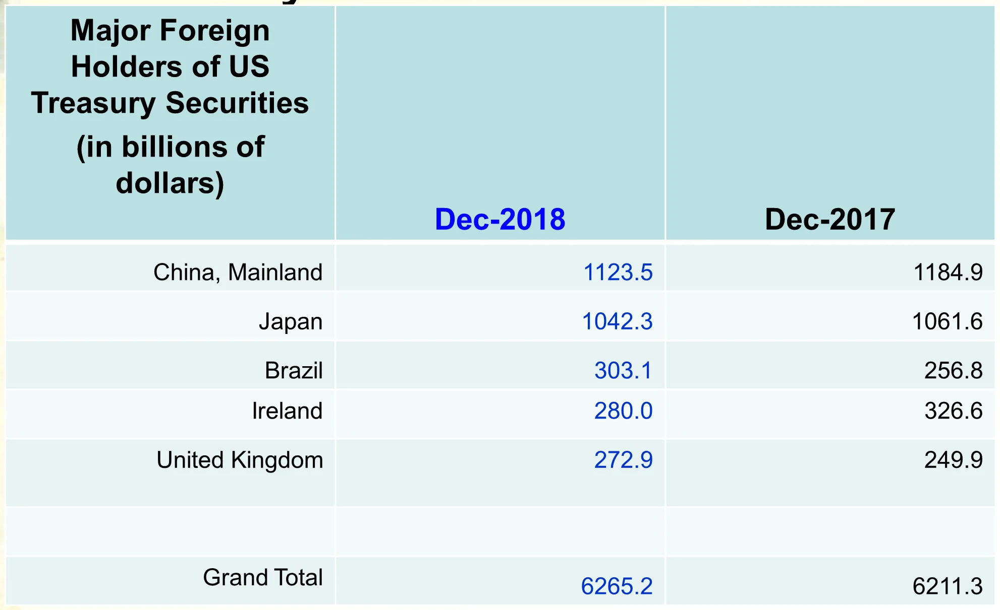
| 美国国债主要海外持有者（十亿美元） | 2018 年 12 月 | 2017 年 12 月 |
|---|---|---|
| 中国大陆 | 1123.5 | 1184.9 |
| 日本 | 1042.3 | 1061.6 |
| 巴西 | 303.1 | 256.8 |
| 爱尔兰 | 280.0 | 326.6 |
| 英国 | 272.9 | 249.9 |
| 合计 | 6265.2 | 6211.3 |
教师备注（原文＋译文）2 段
教师备注（原文照录）
Source: http://ticdata.treasury.gov/Publish/mfh.txt
教师备注（译文）
来源：http://ticdata.treasury.gov/Publish/mfh.txt
- 2017 → 2018 的对比是本页要害：中国大陆减持 61.4（1184.9 → 1123.5），日本减持 19.3，而巴西增持 46.3、英国增持 23.0。总量仍从 6211.3 升到 6265.2——个别国家减持 ≠ 外国整体撤离。
- 与 1-13 对照可见十年尺度的位次变化：2018 年中国第一（1123.5），2024 年日本第一、中国第二（780.2）。
1-15Example 2: Why buying US Treasury Bonds?（动因）
| 原文 | 中文对照 |
|---|---|
| Example 2: Why buying US Treasury Bonds? | 例 2：为什么要买美国国债？ |
| China has accumulated large holdings of US assets by 2009. These accumulations are the result of US borrowing to finance its trade deficit with China. | 到 2009 年，中国已累积大量美国资产。这些积累是美国为对华贸易赤字融资而借债的结果。 |
| To spread risks, our eggs (foreign reserves) need to be invested in the United States, the euro zone and Japan, financial markets, including the purchase of U.S. treasury bonds. | 为分散风险，我们的鸡蛋（外汇储备）需要投在美国、欧元区和日本的金融市场上，包括购买美国国债。 |
- 这句话给出了「中国为什么必须买美债」的会计恒等式解释：中国对美顺差 → 积累美元 → 美元储备必须有去处 → 美债是容量最大、流动性最好的美元资产。对应第 6 章的 NX = S − I 与资本流出（6-9 ~ 6-11）。
- 「鸡蛋不能放在一个篮子里」是资产组合分散（diversification）的口语表述，不是比较优势论证。
1-16Example 2: Risks of holding US Treasury bonds
| 原文 | 中文对照 |
|---|---|
| Example 2: Risks of holding US Treasury bonds | 例 2：持有美国国债的风险 |
| Political risks: China could face U.S. economic sanctions and blockade, freezing of assets. | 政治风险：中国可能面临美国的经济制裁与封锁、资产冻结。 |
| Economic risks: depreciation of US dollars | 经济风险：美元贬值 |
- 两类风险性质不同：政治风险是资产被冻结（本金归零式风险，不可对冲），经济风险是汇率贬值（收益被侵蚀，可用远期或资产多元化部分对冲）。
- 这两条是理解 1-17「为什么明知有风险还要持有」的前提。
1-17Example 2: Then why do we still hold the bonds
| 原文 | 中文对照 |
|---|---|
| Example 2: Then why do we still hold the bonds | 例 2：那我们为什么还持有这些债券 |
| A large sell-off of China's U.S. holdings could diminish the value of these securities in international markets, and in turn, decrease the value of China's remaining dollar-denominated assets. | 中国大规模抛售所持美国资产会压低这些证券在国际市场上的价值，进而使中国剩余美元计价资产的价值下降。 |
| If China reduces its holdings of US debt, others may follow, which will lead to a depreciation of dollars, and thus hurt China's exports to the US. | 如果中国减持美国国债，其他国家可能跟进，导致美元贬值，从而伤害中国对美出口。 |
- 这是「自我伤害的抛售」逻辑，两层机制： 1. 价格效应：抛售 → 债券价格跌 → 自己剩余持仓先亏（还没卖完就贬值）。 2. 跟风效应：抛售被解读为信号 → 他国跟卖 → 美元贬值 → 人民币相对升值 → 出口受损。
- 结论：持有美债是一种「相互确保脆弱」的均衡，与第 6 章大国开放经济（6-55）的相互依存一致。
1-18Example 2: US concerns over China's sudden sales of US bonds
| 原文 | 中文对照 |
|---|---|
| Example 2: US concerns over China's sudden sales of US bonds | 例 2：美国对中国突然抛售美债的担忧 |
| depreciation of US dollar | 美元贬值 |
| increase in US interest rates, and decline of investment | 美国利率上升，投资下降 |
教师备注（原文＋译文）2 段
教师备注（原文照录）
The Federal Reserve could mitigate the interest rate spike by reducing short-term interest rates, although this reduction would influence long-term rates only indirectly, and could worsen the dollar depreciation and increase inflation.
教师备注（译文）
美联储可以通过降低短期利率来缓解利率的飙升，尽管这种下调只会间接影响长期利率，而且可能加剧美元贬值并推高通胀。
- 抛售的传导链：供给增加 → 债券价格下跌 → 收益率（利率）上升 → 投资下降。注意「债券价格与利率反向」是理解全章金融部分的前提（第 4 章 4-33 量化宽松同理）。
- 备注点出政策两难：降短期利率救利率，却加重贬值与通胀——同一工具不能同时盯住利率与汇率，这正是第 6 章开放经济「三难困境」的雏形。
1-19Example 3: European sovereign debt crisis（第 1 帧）
| 原文 | 中文对照 |
|---|---|
| Example 3: European sovereign debt crisis | 例 3：欧洲主权债务危机 |
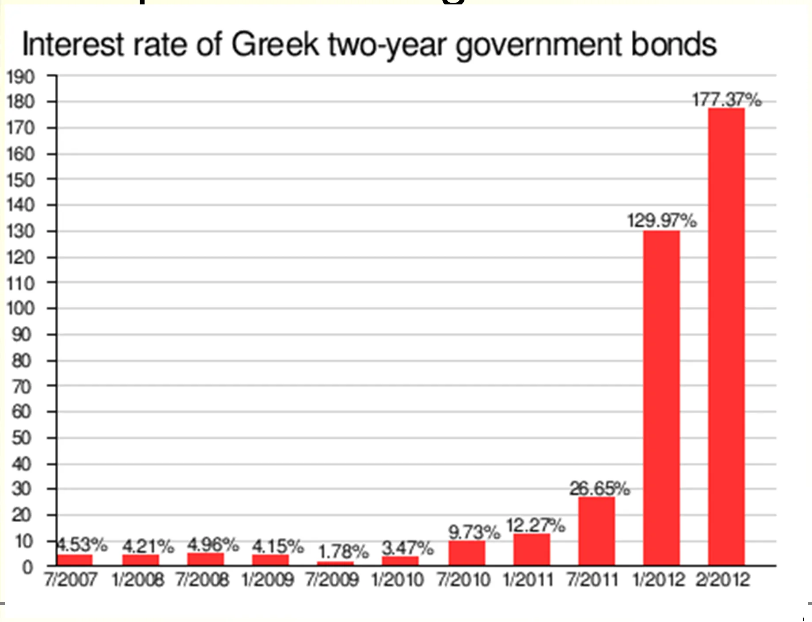
图中数据（照录）
| 时间 | 7/2007 | 1/2008 | 7/2008 | 1/2009 | 7/2009 | 1/2010 | 7/2010 | 1/2011 | 7/2011 | 1/2012 | 2/2012 |
|---|---|---|---|---|---|---|---|---|---|---|---|
| 希腊两年期国债利率 | 4.53% | 4.21% | 4.96% | 4.15% | 1.78% | 3.47% | 9.73% | 12.27% | 26.65% | 129.97% | 177.37% |
教师备注（原文＋译文）6 段
教师备注（原文照录）
Source: http://en.wikipedia.org/wiki/European_sovereign_debt_crisis
On 27 April 2010, the Greek debt rating was decreased to the upper levels of 'junk' status by Standard & Poor's amidst hints of default by the Greek government.[41] Yields on Greek government two-year bonds rose to 15.3% following the downgrading.
希腊曾在2003年至2007年经济快速增长，平均年增长率达到4%。高增长主要来自于财政和经常项目的双赤字以及加入欧元区后更容易获得廉价的贷款带来的基础设施建设的拉动以及信贷消费。
教师备注（译文）
来源：http://en.wikipedia.org/wiki/European_sovereign_debt_crisis
2010 年 4 月 27 日，在希腊政府暗示可能违约的背景下，标准普尔将希腊债务评级下调至「垃圾级」的上限区间。[41] 降级后，希腊政府两年期债券收益率升至 15.3%。
（中文部分原文照录）希腊曾在2003年至2007年经济快速增长，平均年增长率达到4%。高增长主要来自于财政和经常项目的双赤字以及加入欧元区后更容易获得廉价的贷款带来的基础设施建设的拉动以及信贷消费。
- 图表本身就是危机的「心电图」：2009 年 7 月还只有 1.78%（比德国还低，因为市场认定欧元区会兜底），2012 年 2 月飙到 177.37%——两年期利率超过 100% 意味着市场认为两年内必然违约或重组。
- 三个拐点：2010 年 7 月（9.73%，救助启动后仍上升）、2011 年 7 月（26.65%，第二轮救助谈判）、2012 年 1 月（129.97%，PSI 债务重组前夜）。
1-20希腊债务危机大事记（2009–2011）
原文（中文，照录）
2009年10月，刚刚上台的希腊社会党政府宣布，2009年财政赤字占GDP比例将超过12%，远高于欧盟允许的3%上限，希腊债务问题就此浮出水面。
2009年12月8日惠誉宣布，将希腊主权信用评级由"A－"降为"BBB+"，前景展望为负面，这是希腊主权信用级别在过去10年中首次跌落到A级以下。
2010年2月，希腊债务危机扩散到银行系统，希腊四大银行评级遭到下调。
2010年4月，标普下调希腊评级至垃圾级别。
2010年4月，希腊正式向欧盟与IMF申请援助。
2010年5月，希腊宣布大规模财政紧缩计划。
2011年5月，希腊推出一系列私有化进程。
教师备注（原文＋译文）1 段
教师备注（原文照录）
2009年10月初，希腊政府突然宣布，2009年政府财政赤字和公共债务占国内生产总值的比例预计将分别达到12.7%和113%，远超欧盟《稳定与增长公约》规定的3%和60%的上限
- 触发点是数据修正：赤字/GDP 从官方口径的 6% 左右被上修到 12.7%，债务/GDP 达 113%，双双突破《稳定与增长公约》的 3% 与 60% 红线。市场一旦发现统计造假，重估的就是整个国家的偿债意愿，而不只是偿债能力。
- 顺序要记清：赤字曝光（2009-10）→ 评级下调（2009-12 惠誉）→ 传染至银行（2010-02）→ 垃圾级（2010-04 标普）→ 申请援助（2010-04）→ 紧缩（2010-05）。
1-21希腊债务危机大事记：第一轮救助（2010-05 ~ 2011-06）
原文（中文，照录）
First bailout loan and austerity measures (May 2010 - June 2011)
2010年5月，欧元区财长召开特别会议，决定启动希腊救助机制，和国际货币基金组织一道在未来3年内为希腊提供总额为1100亿欧元的贷款。希腊同日宣布了大规模财政紧缩计划。
- 第一轮规模 1100 亿欧元，出资方为欧元区成员国 + IMF（即后来的「三驾马车」：欧盟委员会、欧洲央行、IMF），期限 3 年。
- 救助的交换条件是紧缩：这构成后来「紧缩悖论」的起点——紧缩压低产出，分母 GDP 缩小反而推高债务率（1-26 讨论）。
1-22希腊债务危机大事记：第二轮救助（2011-07 ~ 2014）
原文（中文，照录）
Second bailout loan and austerity measures (July 2011 - 2014)
2011年7月，欧元区17国领导人在布鲁塞尔举行特别峰会，最终敲定对希腊实施第二轮紧急救助的方案。
2012年2月，希腊议会通过了该国与欧盟和国际货币基金组织达成的关于第二轮救援贷款的协议，欧盟和国际货币基金组织将向希腊提供1300亿欧元的新救援贷款。由此，希腊将能够偿还3月份到期的145亿欧元国债，从而避免了无序违约。
教师备注（原文＋译文）1 段
教师备注（原文照录）
2012年6月的希腊议会选举，支持紧缩与留在欧元区的新民主党与泛希腊社会主义行动获得了超过半数的议会席位。
- 第二轮 1300 亿欧元，其中关键一笔是偿还 2012 年 3 月到期的 145 亿欧元国债——救助的直接功能是避免无序违约（orderly default 与 disorderly default 的区别在于是否有序重组、是否引发连锁违约）。
- 备注补充政治条件：2012 年 6 月选举中，支持紧缩与留在欧元区的政党获得过半数席位，说明救助方案能否执行取决于国内政治。
1-23希腊债务危机大事记（2015–2018）
原文（中文，照录）
2015年6月25日，"三驾马车"提出一份新的协议草案，同意向希腊提供155亿欧元的第三轮贷款。
德国联邦议院8月19日批准了希腊第三轮救助协议，为希腊获得约８６０亿欧元救助贷款铺平道路。与此同时，德国法兰克福机场集团将接管希腊１４个机场，作为希腊获取救助的条件之一。
2018年6月，欧元集团债权方认可希腊8年来遵照债权方要求"履行承诺"、落实一系列改革和财政紧缩政策，同意发放最后一笔150亿欧元贷款，同时将希腊还贷期限延长10年。
救助计划终止后，希腊可恢复向国际债券市场寻求融资。
教师备注（原文＋译文）4 段
教师备注（原文照录）
但三驾马车要求希腊削减养老金支出，提高退休年龄，上调增值税税率，以便在2016年实现相当于其国内生产总值1%的增收。
2015年6月30日，IMF宣布希腊未能于当天偿还约17亿美元的IMF贷款。希腊成为IMF历史上第一个债务违约的发达经济体。
希腊总理齐普拉斯先前一直反对国际债权方所提的私有化等方案，致使希腊第三轮救助协议迟迟不能达成。最终，双方在财政目标、私有化以及能源市场自由化等问题上各作让步，协议于8月１１日达成。
希腊总理齐普拉斯8月２０日晚宣布辞职，并要求提前举行大选。
- 数字要分清：155 亿是 2015-06 草案中的过渡性安排，860 亿是第三轮救助总规模，150 亿是 2018-06 的最后一笔。
- 私有化是条件的一部分：法兰克福机场集团接管 14 个希腊机场。
- 2015-06-30 违约的是 IMF 的 17 亿美元贷款——金额不大，但象征意义极大：IMF 历史上第一个违约的发达经济体。
- 时间线收尾：2018 年 6 月救助计划终止，希腊重返国际债券市场融资，代价是还贷期限延长 10 年。
1-24Euro Dollar Exchange Rate
| 原文 | 中文对照 |
|---|---|
| Euro Dollar Exchange Rate | 欧元兑美元汇率 |
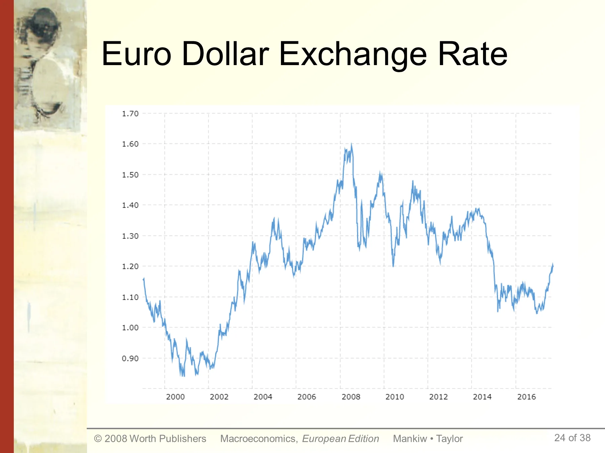
教师备注（原文＋译文）3 段
教师备注（原文照录）
Source: http://www.macrotrends.net/2548/euro-dollar-exchange-rate-historical-chart
次贷危机前的很长一段时间欧元一直是处于一个上升通道，出口受到一定程度的打击.
2011年7 月末，标普已经将希腊主权评级09 年底的A-下调到了CC级（垃圾级）.
- 纵轴为 1 欧元兑多少美元，区间 0.85–1.70，横轴 1999–2017。三个关键位：1999 年约 1.18 起步 → 2000–2001 跌至 0.85 附近（欧元最弱）→ 2008 年冲高至 1.60 附近（次贷危机前欧元最强）→ 2015 年回落至 1.05 附近。
- 备注指出汇率与出口的反向关系：欧元升值 → 希腊（及欧元区）出口竞争力下降 → 经常项目恶化 → 更需要外部融资。这条链条在第 6 章 6-31「NX 与 ε 反向」会正式建模。
- 2011 年 7 月末标普把希腊评级从 A− 直降 CC（垃圾级），与 1-19 图中 26.65% 的利率同一时点。
1-25希腊债务危机的起因
原文（中文，照录）
希腊债务危机的起因
· 竞争力
· 国际金融危机
· 低廉的举债成本
· 高福利
· 老龄化
· 劳动力市场的刚性
· 欧元：货币联盟而非财政联盟
教师备注（原文＋译文）4 段
教师备注（原文照录）
The Greek economy was one of the fastest growing in the Eurozone from 2000 to 2007; during that period, it grew at an annual rate of 4.2% as foreign capital flooded the country.
2010年希腊社会福利支出占GDP的比重为20.6%，而社会福利在政府总支出中的占比更是高达41.6%。
教师备注（译文）
2000 至 2007 年，希腊经济是欧元区增长最快的经济体之一；期间年增长率为 4.2%，外国资本大量涌入。
（中文部分原文照录）2010年希腊社会福利支出占GDP的比重为20.6%，而社会福利在政府总支出中的占比更是高达41.6%。
- 七项成因可分三层，考试常要求归类： | 层次 | 成因 | 机制 | |---|---|---| | 结构性 | 竞争力、劳动力市场刚性、老龄化 | 单位劳动成本上升 → 出口萎缩；养老金支出刚性 | | 政策性 | 高福利、低廉的举债成本 | 加入欧元区后利率趋同于德国，实际利率骤降 → 过度借债 | | 制度性 | 欧元：货币联盟而非财政联盟；国际金融危机 | 无独立汇率与货币政策工具；危机中资本外逃无缓冲 |
- 关键数字：福利支出/GDP 20.6%，福利/政府总支出 41.6%，2000–2007 年均增长 4.2%。高增长靠资本流入而非生产率，这是「虚假繁荣」的判据。
1-26救助？
原文（中文，照录）
救助？
· 德国之态度
· 流动性支持
· 财政紧缩之悖论
· 新的经济增长点？救急VS救穷
教师备注（原文＋译文）7 段
教师备注（原文照录）
2011年10月27日，欧元区领导人与私人银行和保险公司达成一项协议，使其接受对希腊政府债券的50%损失，以降低希腊的债务负担。
欧洲央行(ECB)2012年9月6日公布了"直接货币交易"(OMT)的计划，针对欧元区二级国债市场进行无限量冲销式的国债购买，购买对象主要为到期期限在3年以下的国债。
SMP计划，即证券市场计划(Securities Markets Program，简称SMP)，是指欧洲央行将通过二级市场上购买成员国国债，从而达到干预债市、推升其国债需求并降低收益率的目的。
OMTs和SMP最大的不同就是在于规模限制上。对于此前的SMP，欧洲央行从来没有承诺无限制购买，而且，在事实上，即便市场动荡，欧洲央行也没有购买太多债券。
此外，SMP计划所购债券具有优先偿债权，因此不能令市场安心。
爱尔兰与希腊的对比
2007年德国最大的贸易顺差来源国分别是法国（289亿欧元）、美国（277亿欧元）、英国（276亿欧元）和西班牙（270 亿欧元），其中欧盟成员国就占了3席，德与法、英、西三国外贸顺差占同期外贸顺差的42.5%，在德外贸顺差中占有主要地位。
- 四种救助工具必须分清：
| 工具 | 时间 | 规模承诺 | 关键特征 |
|---|---|---|---|
| 双边贷款（第一/二/三轮） | 2010/2012/2015 | 1100 / 1300 / 860 亿欧元 | 附带紧缩与改革条件 |
| PSI（私人部门参与） | 2011-10-27 | 债权人承担 50% 损失 | 债务减记，非新增贷款 |
| SMP（证券市场计划） | 2010 起 | 无规模承诺 | 购债具优先偿债权，市场不放心 |
| OMT（直接货币交易） | 2012-09-06 | 无限量、冲销式 | 只买 3 年期以下国债 |
- 「财政紧缩之悖论」：紧缩 → 产出下降 → 债务/GDP 反而上升。这是 1-26 标题中「救急 VS 救穷」的核心——流动性支持解决「救急」，结构改革解决「救穷」，两者时间尺度不同。
- 德国态度的经济基础见备注末段：2007 年德国贸易顺差前三来源为法国 289 亿、美国 277 亿、英国 276 亿、西班牙 270 亿欧元，欧盟成员占 3 席，合计占同期顺差的 42.5%。德国是欧元区内部失衡的净受益者，因此援助意愿最低。
1-27如果退出欧元区？
原文（中文，照录）
如果退出欧元区？
· 本币贬值
· 出口
· 挤兑
· 通胀
· 资本外逃
· 失业与衰退
· 赖账
- 七项后果构成一条因果链，不是并列清单： 退出 → 本币贬值 → ①出口改善（唯一好处）；②外债本币值飙升 → 赖账压力；③居民挤兑、资本外逃 → 银行体系崩溃 → 通胀（进口品涨价 + 央行印钞）→ 失业与衰退。
- 与第 6 章对应：本币贬值改善 NX 的前提是马歇尔–勒纳条件（出口弹性足够大），短期内 J 曲线效应可能先恶化贸易余额。
- 希腊最终没有退出（Grexit 未发生），2015 年后选择留在欧元区并接受第三轮救助——这一页是反事实推演，用于说明退出成本高于留在大幅紧缩的成本。
1-28Why learn macroeconomics?（第 1 帧）
| 原文 | 中文对照 |
|---|---|
| Why learn macroeconomics? | 为什么要学宏观经济学？ |
| The macroeconomy affects society's well-being. | 宏观经济影响社会的福祉。 |
| example: Unemployment and social problems | 例：失业与社会问题 |
- 全页只给一个论点：宏观不是抽象数字，它直接决定社会福祉。1-28 ~ 1-34 用三组证据展开这个论点（社会、个人、政治），结构见 1-33 的汇总页。
1-29Unemployment and social problems
| 原文 | 中文对照 |
|---|---|
| Unemployment and social problems | 失业与社会问题 |
| In the U.S., each one-point increase in the unemployment rate is associated with: | 在美国，失业率每上升 1 个百分点，伴随着： |
| 920 more suicides | 自杀增加 920 例 |
| 650 more murders | 谋杀增加 650 起 |
| 4,000 more people admitted to state mental institutions | 住进州立精神病院的人增加 4,000 人 |
| 3,300 more people sent to state prisons | 被送进州立监狱的人增加 3,300 人 |
| 37,000 more deaths | 死亡增加 37,000 人 |
| increases in domestic violence and homelessness | 家庭暴力与无家可归者增加 |
教师备注（原文＋译文）2 段
教师备注（原文照录）
Source: Barry Bluestone and Bennett Harrison, The Deindustrialization of America (New York: Basic Books, 1982), Chapter 3, cited in Robert J. Gordon, Macroeconomics, 4th edition (Boston: Little, Brown and Company), p.334.
教师备注（译文）
来源：Barry Bluestone 与 Bennett Harrison，《美国的去工业化》（纽约：Basic Books，1982 年）第 3 章，转引自 Robert J. Gordon《宏观经济学》第 4 版（波士顿：Little, Brown and Company），第 334 页。
- 五个数字必须记住：+1 个百分点失业率 → 自杀 +920、谋杀 +650、精神病院 +4,000、监狱 +3,300、死亡 +37,000。
- 这是相关性而非因果性的表述（原文用 "is associated with"）。引用时不可写成「失业导致」。
- 死亡 +37,000 是所有条目中最大的绝对数，也解释了为什么宏观稳定政策本身具有公共健康含义。
1-30Why learn macroeconomics?（第 2 帧）
| 原文 | 中文对照 |
|---|---|
| Why learn macroeconomics? | 为什么要学宏观经济学？ |
| The macroeconomy affects society's well-being. | 宏观经济影响社会的福祉。 |
| example: Unemployment and social problems | 例：失业与社会问题 |
| The macroeconomy affects your well-being. | 宏观经济影响你自己的福祉。 |
| example 1: Unemployment and earnings growth | 例 1：失业与收入增长 |
| example 2: Interest rates and mortgage payments | 例 2：利率与按揭还款 |
- 论证层次从「社会」降到「个人」：同一页把 society's well-being 与 your well-being 并列，是为引出 1-31（工资）与 1-32（房贷）两个具体渠道。
1-31French unemployment and earnings growth
| 原文 | 中文对照 |
|---|---|
| French unemployment and earnings growth | 法国的失业与收入增长 |
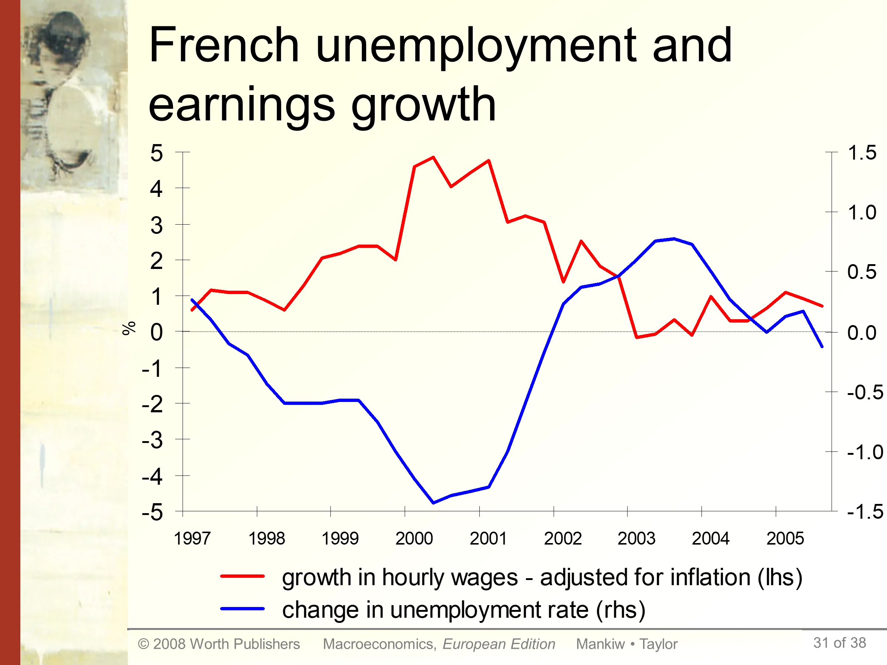
教师备注（原文＋译文）4 段
教师备注（原文照录）
When the unemployment rate is rising, tens or hundreds of thousands of people are losing their jobs. Hopefully our students will not be among them. But the rising unemployment rate even affects those who don't lose their jobs. As the graph shows, during most years there is a clear negative relationship between the (12-month) change in unemployment and the annual growth rate of real wages. In plain English, rising unemployment, as observed in France between 2002 and 2004 is associated with falling wage growth. So when the economy goes into recession, even if our students get to keep their jobs, they will find it much harder to get a pay rise, and some times may even have to accept a small real wage cut. The long run average real wage growth tends to be positive however because of productivity growth.
Students find this relationship intuitive. When unemployment is rising, the supply of workers is rising faster than demand, so wages grow more slowly or even fall. Conversely, falling unemployment gives workers more bargaining power over wages, as it becomes increasingly hard for employers to replace their workers, and increasingly easy for workers to find good opportunities with other companies.
教师备注（译文）
当失业率上升时，成千上万甚至数十万人在失去工作。但愿我们的学生不在其中。但失业率上升甚至会影响那些没有丢工作的人。如图所示，在大多数年份，失业的（12 个月）变化与实际工资年增长率之间存在明显的负相关。用大白话说，正如 2002–2004 年法国所观察到的，失业上升伴随着工资增长下降。所以当经济陷入衰退时，即使我们的学生保住了工作，也会发现加薪难得多，有时甚至不得不接受实际工资的小幅下降。不过由于生产率增长，长期平均实际工资增长倾向为正。
学生觉得这个关系很直观。当失业上升时，劳动力的供给比需求增长得更快，所以工资增长放慢甚至下降。反之，失业下降给工人更强的工资议价能力，因为雇主越来越难替换工人，而工人越来越容易在别的公司找到好机会。
- 图有两条线、两个纵轴：红线为「小时工资增长（已做通胀调整）」用左轴（−5% ~ 5%），蓝线为「失业率变化」用右轴（−1.5 ~ 1.5 个百分点）。
- 读图方法：看两条线的镜像关系——1998–2000 年失业率大幅下降（蓝线 −4 到 −5），工资增长上升（红线 2% 到 5%）；2002–2004 年失业回升，工资增长下滑。
- 机制是劳动供给相对需求的变化，不是「失业者拉低在职工资」；这是效率工资/议价能力（第 7 章 7-31）的实证基础。
1-32Interest rates and mortgage payments
| 原文 | 中文对照 |
|---|---|
| Interest rates and mortgage payments | 利率与按揭还款 |
| For a $100,000 30-year mortgage: | 以 10 万美元、30 年期按揭为例： |
原页数据（照录重排）
| date | actual rate on 30-year mortgage | monthly payment | annual payment |
|---|---|---|---|
| Dec 2000 | 7.6% | $713 | $8,550 |
| Dec 2001 | 5.7% | $586 | $7,033 |
| 日期 | 30 年期按揭实际利率 | 月供 | 年供 |
|---|---|---|---|
| 2000 年 12 月 | 7.6% | 713 美元 | 8,550 美元 |
| 2001 年 12 月 | 5.7% | 586 美元 | 7,033 美元 |
教师备注（原文＋译文）12 段
教师备注（原文照录）
Here's another example of how the macroeconomy directly affects the wallets of most people, including most of our students after they graduate.
Interest rates are determined by economic factors and by the policy of Central Banks (all of which students will learn about in your course). Rates, in turn, impact the size of our car payments and mortgage payments, which affect how nice a car or a house we can afford. To illustrate, let's see how the actual interest rate changes during 2001 affected the typical £100,000 floating rate 30-year mortgage in the UK. (time series of national retail interest rates can be obtained at www.ecb.int. Throughout most of Europe mortgages have fixed rates for periods of at least 5 years. This is not the case in the U.K.)
The Bank of England reduced interest rates several times in 2001, from 6% to 4%. Because most interest rates tend to move in the same direction, mortgage rates have fallen as well (though slightly less than base rates).
This data shows that people who bought homes at the end of 2001 had to pay significantly smaller total interest payments per year on their mortgage than people who bought homes just a year earlier. In the example, the difference is more than £1,500 per year (which corresponds to almost €2,500). You can buy a lot of pizza and compact discs with £1,500.
Of course, when inflation is heating up, the BoE raises rates, and then home ownership becomes more costly.
What if your students are renters? Well, changes in mortgage rates affect demand for apartments, since home ownership and renting are substitutes. An increase in mortgage rates will shift demand toward rentals. Then, when it's time to renew your lease, you'll find that your landlord has raised your rent. And why shouldn't she? With high demand for flats, it would be easy for her to find someone to move in to your flat if you don't accept the rent increase.
教师备注（译文）
这是另一个例子，说明宏观经济如何直接影响大多数人的钱包，包括我们的学生毕业以后。
利率由经济因素与央行政策决定（这些学生都会在课程中学到）。利率反过来影响我们的车贷与按揭还款额，从而影响我们买得起多好的车与房。为说明这一点，我们看看 2001 年实际利率的变化如何影响英国典型的 10 万英镑、浮动利率、30 年期按揭。（各国零售利率的时间序列可在 www.ecb.int 获得。欧洲多数国家的按揭利率至少 5 年固定一次，英国不是这样。）
英格兰银行在 2001 年多次降息，从 6% 降到 4%。由于多数利率同向变动，按揭利率也随之下降（幅度略小于基准利率）。
这些数据表明，2001 年底买房的人，每年要付的按揭利息总额明显少于一年前买房的人。在这个例子里，差额超过每年 1,500 英镑（约合 2,500 欧元）。1,500 英镑可以买很多披萨和 CD。
当然，当通胀升温时，英格兰银行会加息，那时拥有住房就变贵了。
如果你的学生是租房者呢？按揭利率的变化会影响公寓需求，因为买房与租房是替代品。按揭利率上升会把需求转向租房。于是当你续租时，会发现房东涨了房租。她为什么不涨呢？公寓需求旺盛时，如果你不接受涨租，她很容易找到别人搬进来。
- 利率 7.6% → 5.7%，月供 713 → 586 美元，年供 8,550 → 7,033 美元；利率降 1.9 个百分点，年供降 1,517 美元（约 17.7%）。这就是「利率是宏观影响家庭预算最直接的渠道」。
- 备注中的数字与幻灯片不一致（备注用 10 万英镑英国按揭、差额 1,500 英镑；幻灯片用 10 万美元、差额 1,517 美元），原页如此，两者都保留。
- 注意「买房与租房是替代品」这一句：按揭利率上升 → 租房需求上升 → 租金上升，所以加息也伤害租房者。这是常被忽略的一般均衡效应。
1-33Why learn macroeconomics?（第 3 帧，汇总）
| 原文 | 中文对照 |
|---|---|
| Why learn macroeconomics? | 为什么要学宏观经济学？ |
| The macroeconomy affects society's well-being. | 宏观经济影响社会的福祉。 |
| example: Unemployment and social problems | 例：失业与社会问题 |
| The macroeconomy affects your well-being. | 宏观经济影响你自己的福祉。 |
| example 1: Unemployment and earnings growth | 例 1：失业与收入增长 |
| example 2: Interest rates and mortgage payments | 例 2：利率与按揭还款 |
| The macroeconomy affects politics & current events. | 宏观经济影响政治与时事。 |
| example: Inflation and unemployment in election years | 例：选举年的通胀与失业 |
- 这是 1-28 ~ 1-34 的结构页，三级论证：社会 → 个人 → 政治。第三级由 1-34 的选举数据支撑。
- 三级的政策含义不同：社会级 → 稳定政策的社会收益；个人级 → 利率与就业渠道；政治级 → 经济表现影响选举结果，从而影响政策选择本身。
1-34Inflation and Unemployment in Election Years in the United States
| year | U rate | inflation rate | elec. outcome |
|---|---|---|---|
| 1976 | 7.7% | 5.8% | Carter (Dem) |
| 1980 | 7.1% | 13.5% | Reagan (Rep) |
| 1984 | 7.5% | 4.3% | Reagan (Rep) |
| 1988 | 5.5% | 4.1% | Bush I (Rep) |
| 1992 | 7.5% | 3.0% | Clinton (Dem) |
| 1996 | 5.4% | 3.3% | Clinton (Dem) |
| 2000 | 4.0% | 3.4% | Bush II (Rep) |
| 2004 | 5.5% | 2.7% | Bush II (Rep) |
| 年份 | 失业率 | 通胀率 | 选举结果 |
|---|---|---|---|
| 1976 | 7.7% | 5.8% | 卡特（民主党） |
| 1980 | 7.1% | 13.5% | 里根（共和党） |
| 1984 | 7.5% | 4.3% | 里根（共和党） |
| 1988 | 5.5% | 4.1% | 布什一世（共和党） |
| 1992 | 7.5% | 3.0% | 克林顿（民主党） |
| 1996 | 5.4% | 3.3% | 克林顿（民主党） |
| 2000 | 4.0% | 3.4% | 布什二世（共和党） |
| 2004 | 5.5% | 2.7% | 布什二世（共和党） |
教师备注（原文＋译文）18 段
教师备注（原文照录）
When the economy is doing poorly, there tends to be a change in the party that controls the White House.
1976: The rates of inflation () and unemployment (u) both high. Incumbent (Ford, R) loses.
1980: u still high, even higher. Incumbent (Carter, D) loses.
1984: u still high, but much lower. Incumbent (Reagan) wins.
1988: the same, u much lower. Incumbent party wins.
1992: low, but u much higher (and was higher yet in 1991). Incumbent loses.
1996: u much lower, incumbent wins.
2000: Economy doing great, and incumbent party candidate (Gore, D) wins majority of popular vote, but loses electoral college to challenger.
2004: The economy is doing reasonably well and the incumbent is re-elected.
教师备注（译文）
当经济表现糟糕时，控制白宫的政党往往会发生变化。
1976：通胀率（π）与失业率（u）都高。在任者（福特，共和党）落败。
1980：u 仍高，π 更高。在任者（卡特，民主党）落败。
1984：u 仍高，但 π 低得多。在任者（里根）胜选。
1988：π 持平，u 低得多。执政党胜选。
1992：π 低，但 u 高得多（1991 年更高）。在任者落败。
1996：u 低得多，在任者胜选。
2000：经济表现很好，执政党候选人（戈尔，民主党）赢得普选多数票，但在选举人团中输给挑战者。
2004：经济表现尚可，在任者连任。
- 表格的读法是看变化方向而非水平：1984 年在任者连任，是因为通胀从 13.5% 降到 4.3%（而非失业率低，7.5% 仍高）；1992 年在任者落败，是因为失业从 1991 年更高位维持到 7.5%。
- 2000 年是反例，必须记：赢得普选多数票却输掉选举人团——说明「经济好 → 执政党赢」不是铁律。
- 备注原文中的 π 符号在导出时丢失（"inflation ()"），此处按上下文补为 π，其余照录。
1-35What's behind
| 原文 | 中文对照 |
|---|---|
| What's behind | 背后是什么 |
| We got models! | 我们有模型！ |
- 一句话过渡页：从「为什么学」转到「怎么分析」。全章后半（1-36 ~ 1-53）都在讲模型方法论。
1-36Economic models
| 原文 | 中文对照 |
|---|---|
| Economic models | 经济模型 |
| …are simplified versions of a more complex reality | ……是更复杂现实的简化版本 |
| irrelevant details are stripped away | 剥离掉无关细节 |
| Used to | 用于 |
| show the relationships between economic variables | 展示经济变量之间的关系 |
| explain the economy's behavior | 解释经济的行为 |
| devise policies to improve economic performance | 设计改善经济表现的政策 |
- 模型的三个用途（展示关系、解释行为、设计政策）对应三类考题：比较静态、因果解释、政策评估。
- 「剥离无关细节」是模型的优点而非缺陷——判断模型好坏的标准不是「像不像现实」，而是「能否回答特定问题」（1-48 展开）。
1-37Example of a model: The supply & demand for new cars
| 原文 | 中文对照 |
|---|---|
| Example of a model: The supply & demand for new cars | 模型示例：新车的供给与需求 |
| explains the factors that determine the price of cars and the quantity sold. | 解释决定汽车价格与销售量的因素。 |
| assumes the market is competitive: each buyer and seller is too small to affect the market price | 假设市场是竞争性的：每个买者与卖者都太小，无法影响市场价格 |
| Variables: | 变量： |
| Q d = quantity of cars that buyers demand | Q^d = 买者需求的汽车数量 |
| Q s = quantity that producers supply | Q^s = 生产者供给的数量 |
| P = price of new cars | P = 新车价格 |
| Y = aggregate income | Y = 总收入 |
| Ps = price of steel (an input) | Ps = 钢价（一种投入品） |
教师备注（原文＋译文）4 段
教师备注（原文照录）
Students will realize that the car market is not competitive. However, if all we want to know is how an increase in the price of steel or a fall in consumer income affects the price and quantity of cars, then it's fine to use this model.
In general, making unrealistic assumptions is okay, if they simplify the analysis without affecting its validity.
教师备注（译文）
学生会意识到汽车市场并不是竞争性的。然而，如果我们只想知道钢价上涨或消费者收入下降如何影响汽车的价格与数量，那么使用这个模型就没问题。
一般来说，只要不切实际的假设能简化分析而不影响其有效性，就是可以接受的。
- 五个变量先分清内外生：内生 = P、Q^d、Q^s；外生 = Y、Ps（1-46 明确）。这是本章最重要的分类练习。
- 「假设市场是竞争性的」显然不真实（汽车是寡头市场），但模型仍有效——这是「假设的现实性 ≠ 模型的有效性」的标准范例，考试常以简答题出现。
1-38The demand for cars
| 原文 | 中文对照 |
|---|---|
| The demand for cars | 汽车的需求 |
| shows that the quantity of cars consumers demand is related to the price of cars and aggregate income. | 表明消费者需求的汽车数量与汽车价格和总收入相关。 |
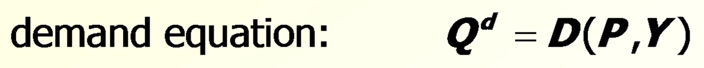
需求方程（照录）
Q^d = D(P, Y)
需求量 Q^d 是价格 P 与总收入 Y 的函数 D(·, ·)
- 注意 D(P, Y) 只表示「有关系」，不表示具体函数形式——这是 1-39、1-40 要区分的一般函数记号 vs 具体函数形式。
- 需求方程中 P 与 Q^d 反向、Y 与 Q^d 同向，但这一点在本页尚未写出，要到 1-41 的图形与 1-44 的比较静态才体现。
1-39Digression: Functional notation（第 1 帧）
| 原文 | 中文对照 |
|---|---|
| Digression: Functional notation | 插叙：函数记号 |
| General functional notation shows only that the variables are related: | 一般函数记号只表明变量之间存在关系： |
| A list of the variables that affect Q d | 影响 Q^d 的变量清单 |
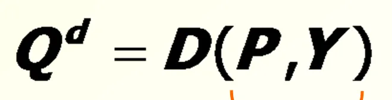
Q^d = D(P, Y)
- 「一般函数记号」只列出自变量清单，不给出系数。D(P, Y) 读作「Q^d 是 P 与 Y 的函数」，括号内的顺序即变量清单。
- 这是宏观经济学的通用写法：第 3 章的 Y = F(K, L)、第 5 章的 (M/P)^d = L(i, Y) 都是同一记号体系。
1-40Digression: Functional notation（第 2 帧）
| 原文 | 中文对照 |
|---|---|
| Digression: Functional notation | 插叙：函数记号 |
| General functional notation shows only that the variables are related: | 一般函数记号只表明变量之间存在关系： |
| A specific functional form shows the precise quantitative relationship: | 具体的函数形式给出精确的数量关系： |
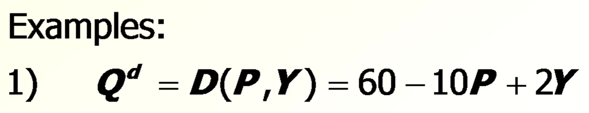
1) Q^d = D(P, Y) = 60 − 10P + 2Y
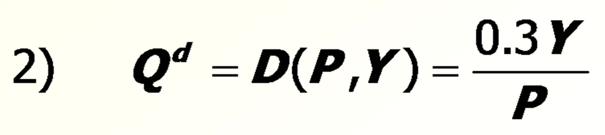
2) Q^d = D(P, Y) = 0.3Y / P
教师备注（原文＋译文）2 段
教师备注（原文照录）
We often aren't concerned with the exact quantitative relationship between variables, so we will often just use the general functional notation.
教师备注（译文）
我们常常并不关心变量之间精确的数量关系，所以经常只使用一般函数记号。
- 两个具体形式的含义要会读：
- 例 1：线性需求，P 的系数 −10 表示价格每升 1 单位，需求量降 10；Y 的系数 +2 表示收入每升 1 单位，需求量增 2。
- 例 2：非线性（双曲型），Q^d 与 P 成反比、与 Y 成正比，价格趋近 0 时需求量趋于无穷。
- 全课绝大多数模型只用一般记号，因为结论（如「P 上升则 Q^d 下降」）不依赖于具体函数形式。
1-41The market for cars: demand
| 原文 | 中文对照 |
|---|---|
| The market for cars: demand | 汽车市场：需求 |
| demand equation: | 需求方程： |
| Q d = D(P, Y) | Q^d = D(P, Y) |
| P Price of cars | P 汽车价格 |
| Q Quantity of cars | Q 汽车数量 |
| D | D（需求曲线） |
| The demand curve shows the relationship between quantity demanded and price, other things equal. | 需求曲线表示在其他条件不变时，需求量与价格之间的关系。 |
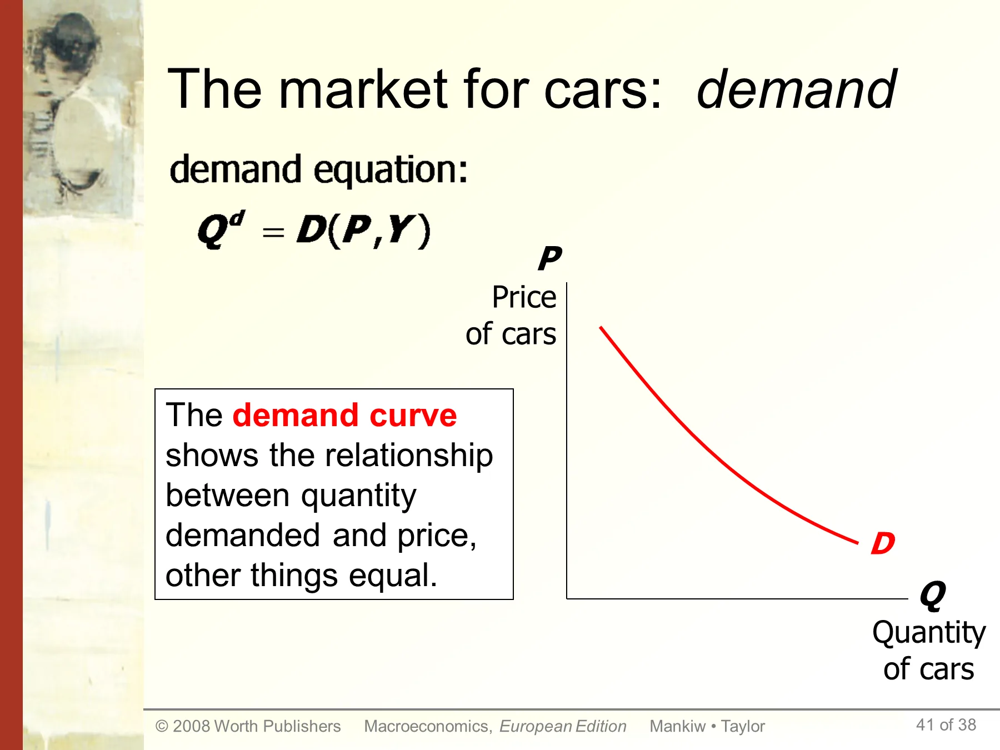
- 「other things equal」（其他条件不变）是画需求曲线的前提：只有 Y 固定，才能画出 P 与 Q^d 的一一对应。
- 曲线向右下方倾斜 = 需求定律。注意图上没有刻度，这是定性图形而非数据图。
- 与 1-38 对照：方程是 Q^d = D(P, Y)，图形是把这个二元函数在给定 Y 下切成一条曲线。
1-42The market for cars: supply
| 原文 | 中文对照 |
|---|---|
| The market for cars: supply | 汽车市场：供给 |
| supply equation: | 供给方程： |
| Q s = S(P, Ps) | Q^s = S(P, Ps) |
| P Price of cars | P 汽车价格 |
| Q Quantity of cars | Q 汽车数量 |
| S | S（供给曲线） |
| D | D（需求曲线） |
| The supply curve shows the relationship between quantity supplied and price, other things equal. | 供给曲线表示在其他条件不变时，供给量与价格之间的关系。 |
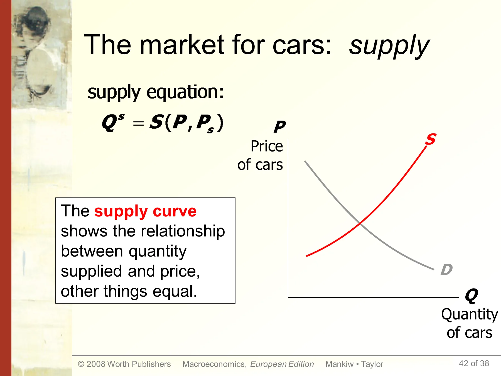
教师备注（原文＋译文）2 段
教师备注（原文照录）
An example of the second variable in the bracket is input price.
教师备注（译文）
括号中第二个变量的一个例子是投入品价格。
- 供给方程的自变量是 P 与 Ps（投入品价格），与需求方程的自变量（P 与 Y）不同——这是内外生划分的关键：两个方程共享内生变量 P，但外生变量各不相同。
- 供给曲线向右上方倾斜；Ps 上升会使整条 S 曲线左移（1-45 演示）。
1-43The market for cars: equilibrium
| 原文 | 中文对照 |
|---|---|
| The market for cars: equilibrium | 汽车市场：均衡 |
| Q Quantity of cars | Q 汽车数量 |
| P Price of cars | P 汽车价格 |
| S | S（供给曲线） |
| D | D（需求曲线） |
| equilibrium price | 均衡价格 |
| equilibrium quantity | 均衡数量 |
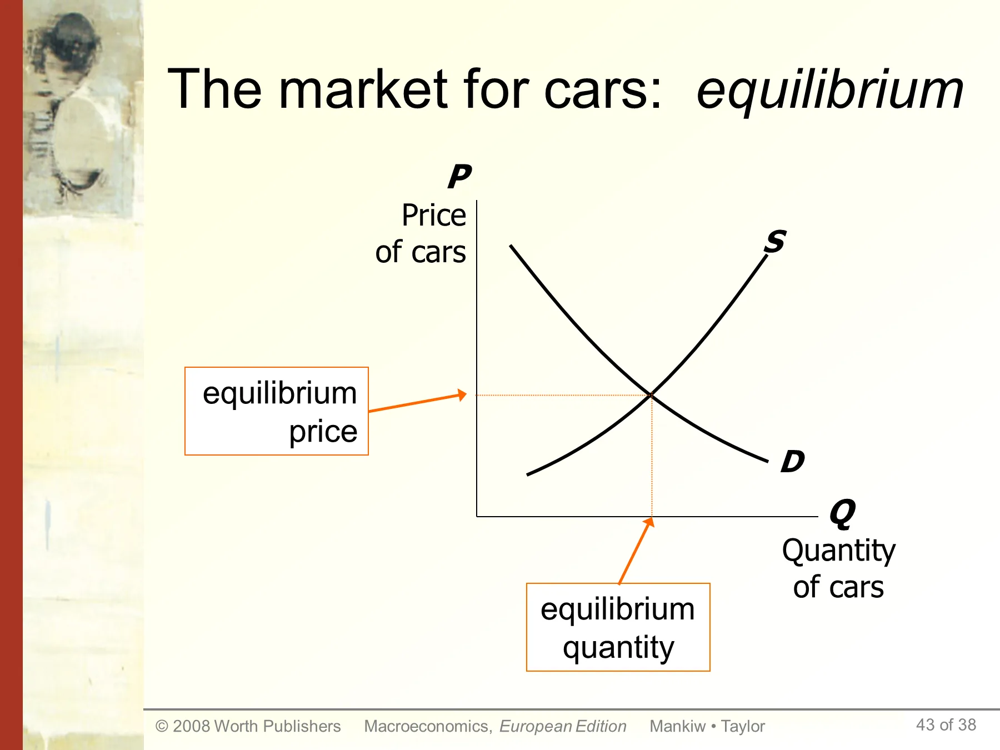
- 均衡的定义是市场出清：Q^d = Q^s，此时价格既无上行压力也无下行压力。
- 图形上均衡是 S 与 D 的交点；代数上是解方程组 Q^d = D(P, Y)、Q^s = S(P, Ps)、Q^d = Q^s 得到 P，再回代得 Q。
- 这一页是 1-44、1-45 比较静态的基准状态，必须先记牢「初始均衡」。
1-44The effects of an increase in income
| 原文 | 中文对照 |
|---|---|
| The effects of an increase in income: | 收入增加的影响： |
| Q Quantity of cars | Q 汽车数量 |
| P Price of cars | P 汽车价格 |
| S | S（供给曲线） |
| D1 → D2 | 需求曲线由 D1 移至 D2 |
| Q1 → Q2 | 均衡数量由 Q1 增至 Q2 |
| P1 → P2 | 均衡价格由 P1 升至 P2 |
| An increase in income increases the quantity of cars consumers demand at each price… | 收入增加使消费者在每一价格下需求的汽车数量都增加…… |
| …which increases the equilibrium price and quantity. | ……这提高了均衡价格与均衡数量。 |
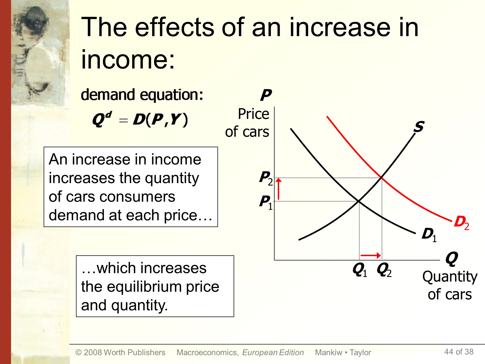
- 这是需求曲线移动（shift）而非沿曲线移动（movement along）的范例：Y 是外生变量，Y 变 → 整条 D 右移 → 新交点 P2 > P1、Q2 > Q1。
- 三个结论要能默写：P 上升、Q 上升、S 曲线不动但供给量增加（沿 S 上移）。
- 区分口诀：外生变量变 → 曲线移；内生变量（P）变 → 沿曲线移。
1-45The effects of a steel price increase
| 原文 | 中文对照 |
|---|---|
| The effects of a steel price increase: | 钢价上涨的影响： |
| Q Quantity of cars | Q 汽车数量 |
| P Price of cars | P 汽车价格 |
| S1 → S2 | 供给曲线由 S1 移至 S2 |
| Q1 → Q2 | 均衡数量由 Q1 减至 Q2 |
| P1 → P2 | 均衡价格由 P1 升至 P2 |
| D | D（需求曲线） |
| An increase in Ps reduces the quantity of cars producers supply at each price… | Ps 上升使生产者在每一价格下供给的汽车数量减少…… |
| …which increases the market price and reduces the quantity. | ……这提高了市场价格并减少了数量。 |
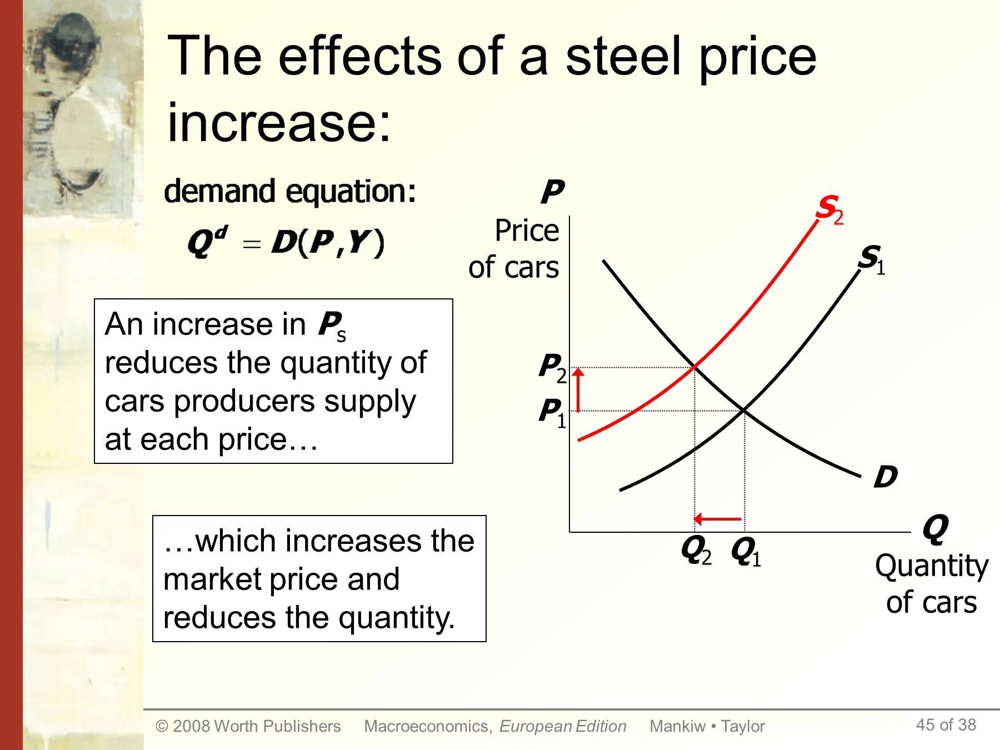
- 与 1-44 形成对照：需求冲击 → P↑ Q↑；供给冲击 → P↑ Q↓。价格方向相同、数量方向相反，这是判别冲击来自哪一侧的标准方法。
- Ps 是外生变量，变化使 S 左移；D 不动，但需求量沿 D 减少。
- 现实对应：2021–2022 年芯片与钢材涨价推高车价且压低产量，正是这一页的实例。
1-46Endogenous vs. exogenous variables
| 原文 | 中文对照 |
|---|---|
| Endogenous vs. exogenous variables: | 内生变量与外生变量： |
| The values of endogenous variables are determined in the model. | 内生变量的值由模型内部决定。 |
| The values of exogenous variables are determined outside the model: the model takes their values & behavior as given. | 外生变量的值由模型外部决定：模型把它们的取值与行为视为给定。 |
| In the model of supply & demand for cars, | 在汽车供需模型中， |
原页公式（照录）
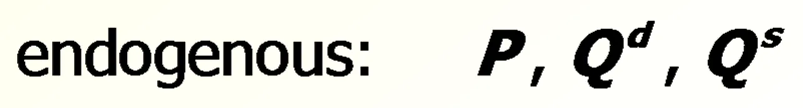
endogenous: P, Q^d, Q^s
内生变量：P、Q^d、Q^s
- 汽车模型的完整划分：内生 = P、Q^d、Q^s（3 个）；外生 = Y、Ps（2 个）。方程 2 个（需求、供给）+ 均衡条件 1 个 = 3 个方程解 3 个内生变量，方程数与未知数相等。
- 判断标准只有一条：这个变量的值是不是要靠模型解出来。解得出 → 内生；给定 → 外生。
- 同一变量在不同模型中内外生身份可以互换：第 3 章里 Y 是内生（由 F(K,L) 决定），第 5 章里 Y 又成了外生给定。这是考试高频陷阱。
1-47Now you try
| 原文 | 中文对照 |
|---|---|
| Now you try: | 现在你来试： |
| Write down demand and supply equations for mobile phones; include two exogenous variables in each equation. | 写出手机的需求与供给方程；每个方程包含两个外生变量。 |
| Draw a supply-demand graph for mobile phones. | 画出手机的供需图。 |
| Use your graph to show how a change in one of your exogenous variables affects the model's endogenous variables. | 用你的图说明其中一个外生变量的变化如何影响模型的内生变量。 |
- 标准答案的结构（照 1-37 ~ 1-45 的套路）：
- 需求：Q^d = D(P, Y)，或加入替代品价格 P_sub → Q^d = D(P, Y, P_sub)
- 供给：Q^s = S(P, P_chip)，P_chip 为芯片价格
- 内生：P、Q^d、Q^s；外生：Y、P_sub、P_chip
- 作图三步：画初始交点 → 判断哪条曲线移动、向哪移 → 读出 P、Q 的变化方向。
1-48A Multitude of Models（第 1 帧）
| 原文 | 中文对照 |
|---|---|
| A Multitude of Models | 模型多种多样 |
| No one model can address all the issues we care about. For example, | 没有一个模型能回答我们关心的所有问题。例如， |
| If we want to know how a fall in aggregate income affects new car prices, we can use the S/D model for new cars. | 如果我们想知道总收入下降如何影响新车价格，可以用新车供需模型。 |
| But if we want to know why aggregate income falls, we need a different model. | 但如果我们想知道总收入为什么下降，就需要另一个模型。 |
- 关键区分：汽车供需模型把 Y 当作外生给定，所以它能回答「Y 变 → 车价变」，但无法回答「Y 为什么变」。要解释 Y，必须换成把 Y 内生化的模型（第 3 章的 Y = F(K, L)）。
- 这就是「模型的选择取决于问题」的具体演示，也是 1-49 的学习方法要求的由来。
1-49A Multitude of Models（第 2 帧）
| 原文 | 中文对照 |
|---|---|
| A Multitude of Models | 模型多种多样 |
| So we will learn different models for studying different issues (e.g. unemployment, inflation, long-run growth). | 所以我们将学习不同的模型来研究不同的问题（如失业、通胀、长期增长）。 |
| For each new model, you should keep track of | 对每一个新模型，你都应记录 |
| its assumptions, | 它的假设， |
| which of its variables are endogenous and which are exogenous, | 它的哪些变量是内生、哪些是外生， |
| the questions it can help us understand, | 它能帮我们理解的问题， |
| and those it cannot. | 以及它不能回答的问题。 |
- 这四条是全课的复习清单，建议每学一个模型（第 3 章可贷资金、第 4 章货币乘数、第 5 章货币数量论、第 6 章开放经济、第 7 章自然失业率）都按此四栏做表。
- 第 4 条尤其重要：模型的边界（不能回答什么）常是论述题的得分点。
1-50Prices: Flexible Versus Sticky
| 原文 | 中文对照 |
|---|---|
| Prices: Flexible Versus Sticky | 价格：弹性还是黏性 |
| Market clearing: an assumption that prices are flexible and adjust to equate supply and demand. | 市场出清：假设价格是弹性的，会调整到使供给等于需求。 |
| In the short run, many prices are sticky—they adjust only sluggishly in response to supply/demand imbalances. | 在短期，许多价格是黏性的——它们对供需失衡的反应调整得很迟缓。 |
| For example: | 例如： |
| labor contracts that fix the nominal wage for a year or longer | 把名义工资固定一年或更久的劳动合同 |
| magazine prices that publishers change only once every 3-4 years | 出版商每 3–4 年才调整一次的杂志价格 |
教师备注（原文＋译文）2 段
教师备注（原文照录）
In microeconomics you will usually consider only the first case. In macroeconomics however the fact that prices do not adjust fully at once can be very important in describing how the economy behaves and what government policy is most appropriate.
教师备注（译文）
在微观经济学中，你通常只考虑第一种情形。但在宏观经济学中，价格不能一次性充分调整这一事实，对于描述经济如何运行、以及什么政府政策最合适，可能非常重要。
- 两个价格黏性的实例都是合约期限造成的：劳动合同固定名义工资 1 年以上；杂志价格 3–4 年一调。合约期限 = 价格黏性的微观基础。
- 「市场出清」是一个假设，不是事实陈述；它适用于长期分析（第 3–7 章），不适用于短期（第 11–15 章）。
- 备注点出微观与宏观的分野：微观默认价格灵活，宏观必须处理价格不灵活。
1-51Prices: Flexible Versus Sticky（含义）
| 原文 | 中文对照 |
|---|---|
| Prices: Flexible Versus Sticky | 价格：弹性还是黏性 |
| The economy's behavior depends partly on whether prices are sticky or flexible: | 经济的行为部分取决于价格是黏性还是弹性： |
| If prices are sticky, then demand won't always equal supply. This helps explain | 如果价格是黏性的，需求就不总等于供给。这有助于解释 |
| unemployment (excess supply of labor) | 失业（劳动的过度供给） |
| the occasional inability of firms to sell what they produce | 企业有时卖不掉自己生产的东西 |
| Long run: prices flexible, markets clear, economy behaves very differently. | 长期：价格弹性，市场出清，经济表现非常不同。 |
- 核心等式：价格黏性 → 数量配给（quantity rationing）→ 失业与库存积压。失业被定义为「劳动的过度供给」，这是第 7 章 7-23 ~ 7-25 实际工资刚性的理论入口。
- 「长期价格弹性、短期价格黏性」是全书的时间尺度划分依据（1-52 直接据此编排章节）。
1-52Outline of this book（第 1 帧）
| 原文 | 中文对照 |
|---|---|
| Outline of this book: | 本书结构： |
| Introductory material (chaps. 1 & 2) | 导论性材料（第 1、2 章） |
| Classical Theory (chaps. 3-7) How the economy works in the long run, when prices are flexible | 古典理论（第 3–7 章）：价格弹性时，经济在长期如何运行 |
| Growth Theory (chaps. 8-10) The standard of living and its growth rate over the very long run | 增长理论（第 8–10 章）：极长期中的生活水平及其增长率 |
| Business Cycle Theory (chaps 11-15) How the economy works in the short run, when prices are sticky. | 经济周期理论（第 11–15 章）：价格黏性时，经济在短期如何运行 |
教师备注（原文＋译文）4 段
教师备注（原文照录）
The portion of the book described on this slide comprises the core material. It is organized around time horizons: the long run (flexible prices), the very long run (growth in capital, the population, and technology itself), and the short run (sticky prices and economic fluctuations).
But wait! There's more! See the next slide….
教师备注（译文）
本页所述的这部分内容构成全书核心材料。它按时间尺度组织：长期（价格弹性）、极长期（资本、人口与技术本身的增长）、短期（价格黏性与经济波动）。
但等等！还有更多！看下一页……
- 三个时间尺度对应三套模型，这是全书的骨架：
| 时间尺度 | 价格假设 | 章节 | 核心变量 |
|---|---|---|---|
| 长期 | 弹性、市场出清 | 3–7 | K、L、技术给定，Y 由供给面决定 |
| 极长期 | 弹性 + 要素积累 | 8–10 | 资本积累、人口、技术进步 |
| 短期 | 黏性 | 11–15 | 总需求波动、政策 |
- 本课程覆盖到第 7 章为止（notes1–notes7），即「导论 + 古典理论」部分。
1-53Outline of this book（第 2 帧）
| 原文 | 中文对照 |
|---|---|
| Outline of this book: | 本书结构： |
| Policy debates (Chaps. 16-20) Should the government try to smooth business cycle fluctuations? Is the government's debt a problem? How does the financial system work, and how to prevent financial crises? | 政策争论（第 16–20 章）：政府是否应平抑经济周期波动？政府债务是不是问题？金融体系如何运行，如何防止金融危机？ |
- 三个政策问题分别对应：稳定政策（财政/货币）、公债可持续性、金融监管。本课程不涉及，但 1-7 的「赤字」问题在此收尾。
- 结构上，1-52 是「理论部分」，1-53 是「政策部分」，两页合起来才是全书完整目录。
1-54Chapter summary（第 1 帧）
| 原文 | 中文对照 |
|---|---|
| Chapter summary | 本章总结 |
| Macroeconomics is the study of the economy as a whole, including | 宏观经济学是把经济作为一个整体来研究，包括 |
| growth in incomes | 收入增长 |
| changes in the overall level of prices | 总体价格水平的变化 |
| the unemployment rate | 失业率 |
| Macroeconomists attempt to explain the economy and to devise policies to improve its performance. | 宏观经济学家试图解释经济，并设计政策以改善其表现。 |
- 三个研究对象（收入增长、物价、失业率）与第 2 章的三个核心统计量（GDP、CPI、失业率）一一对应，这是第 1 章 → 第 2 章的直接接口。
- 「解释」与「设计政策」是实证与规范两个层面，考试作答时要分开表述。
1-55Chapter summary（第 2 帧）
| 原文 | 中文对照 |
|---|---|
| Chapter summary | 本章总结 |
| Economists use different models to examine different issues. | 经济学家用不同的模型考察不同的问题。 |
| Models with flexible prices describe the economy in the long run; models with sticky prices describe economy in the short run. | 价格弹性的模型描述长期经济；价格黏性的模型描述短期经济。 |
| Macroeconomic events and performance arise from many microeconomic transactions, so macroeconomics uses many of the tools of microeconomics. | 宏观事件与表现源自许多微观交易，因此宏观经济学使用许多微观经济学的工具。 |
- 三句话分别是：多模型原则（1-48、1-49）、价格假设决定时间尺度（1-50、1-51）、宏观的微观基础（加总问题）。
- 第三句是第 3 章的伏笔：Y = F(K, L) 由无数企业的生产决策加总而来，要素价格由微观的边际产品定价决定。